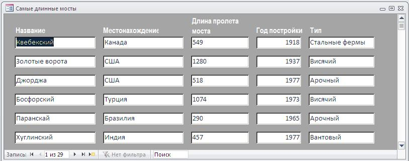

Практическая работа "Создание запросов и отчетов"
- Откройте эту папку и скопируйте базу данных DB_7.txt.
Сохраните базу с именем 11Ф_NN_DB_7.accdb. Это вариант базы "Мосты".
- Изучите структуру и содержимое таблиц.
- Сформируйте ленточную форму для таблицы Мосты.

- Сформируйте следующие запросы:
- Мосты, построенные после 1964 года.
- Местонахождение мостов, построенных в 1964 году.
- Мосты с длиной пролета более 600 метров.
- Все сведения о мостах арочного типа.
- Мосты определённого года постройки (запрос, который вначале запрашивает интересующий год, а затем выводит сведения о мостах, построенных в этот год).
- Мосты определённой страны (запрос, который вначале запрашивает интересующую страну, а затем выводит сведения о мостах, построенных в этой стране).
- Сформируйте отчеты по каждому запросу.
- *Добавьте в таблицу поле, в котором возможно размещение фотографии моста.
- *Добавьте в таблицу несколько фотографий.
- Сформируйте форму для таблицы "Мосты", в которой отображаюся сведения об одном мосте и его фотография. Поработайте над дизайном этой формы. (Пример для тех, кто не придумал свой дизайн).
- Создайте отчет "Сведения о мостах с длиной пролета более 600 метров", в котором также выводятся фотографии мостов. (
Пример для тех, кто не придумал свой дизайн).
|